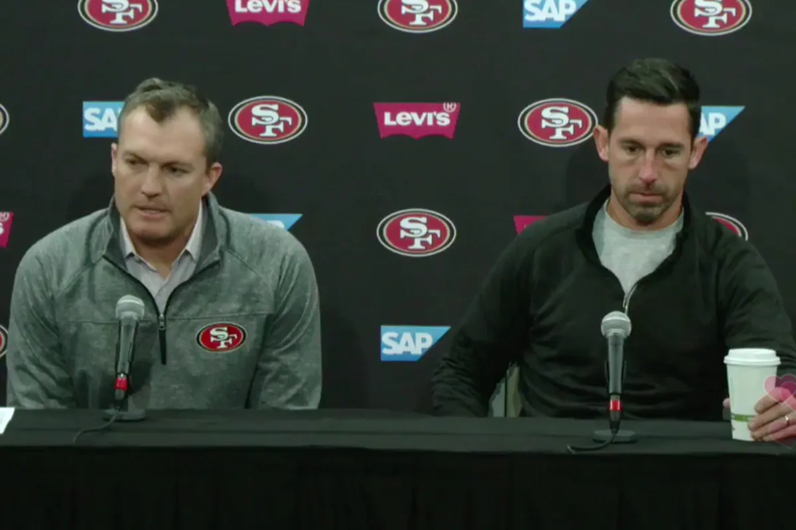
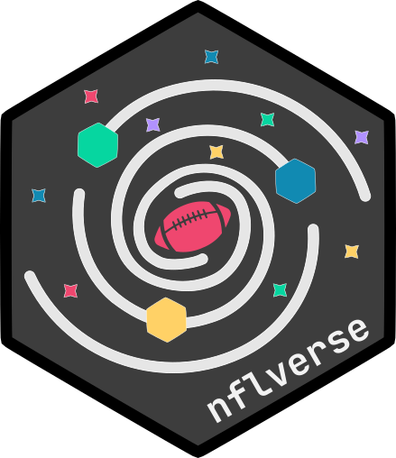

Inspiration for the blog
“The Great Equalizer” is the team-building philosophy of my favorite NFL team, the San Francisco 49ers, under their current General Manager John Lynch and Head Coach Kyle Shanahan. When Lynch and Shanahan interviewed with the 49ers in 2017, they were both asked “You have 150 pts in your salary cap. How are you allocating resources?”
Lynch, a Hall of Fame Safety, considered the question from the standpoint of what allowed his NFL career to thrive, especially in Tampa Bay, where he won a Super Bowl. Shanahan, a very successful offensive coordinator for many years, considered it from his perspective as an offensive architect: What is the one thing over the years that has caused problems for his offenses?
Even though the two were interviewed separately, they gave the same answer: invest a lot in the defensive line. It should be the great equalizer against the best Quarterbacks like Tom Brady or Patrick Mahomes.

The duo turned around one of the worst teams in the NFL into a Super Bowl contender, in large part due to a great defensive line. But their roster decisions have also had very high opportunity costs such as passing on Patrick Mahomes in 2017, CeeDee Lamb or Tristan Wirfs in 2020, the Trey Lance trade in 2021, all the draft picks invested in Running Backs, drafting Jake Moody in 2023, etc. The consequences of those decisions loom large in my mind because I think they were the reason behind the 49ers shortcomings in two NFC title games and one Super Bowl. But in hindsight, many fans like myself are happy to have Shanahan and Lynch.
The 49ers’ success (and failures) since 2017 has changed how I think about football. I still love watching the games but have come to appreciate the off-the-field aspects like roster construction, coaching, culture, and how teams allocate scarce resources like cap space and draft capital. I began to learn from people very knowledgeable about the sport like Robert Mays, Nate Tice, Eric Eager, Brett Kollmann, and J.T. O’Sullivan. I wouldn’t be here today without FTNData from Frank Brank and  nflverse made and maintained by Ben Baldwin, Tan Ho, Lee Sharpe, John Edwards, and Sebastian Carl.
Future outlook
Although I will never know about the sport like people who work in or play football, I enjoy learning about it. And in this blog, I want to foster my curiosity. I want to ask questions, research, and write about my answer using film or data. Yes, I want to do analytics but to add cool insights and value to watching the games.
I hope you enjoy reading every blog post and find it adds to your love for football.